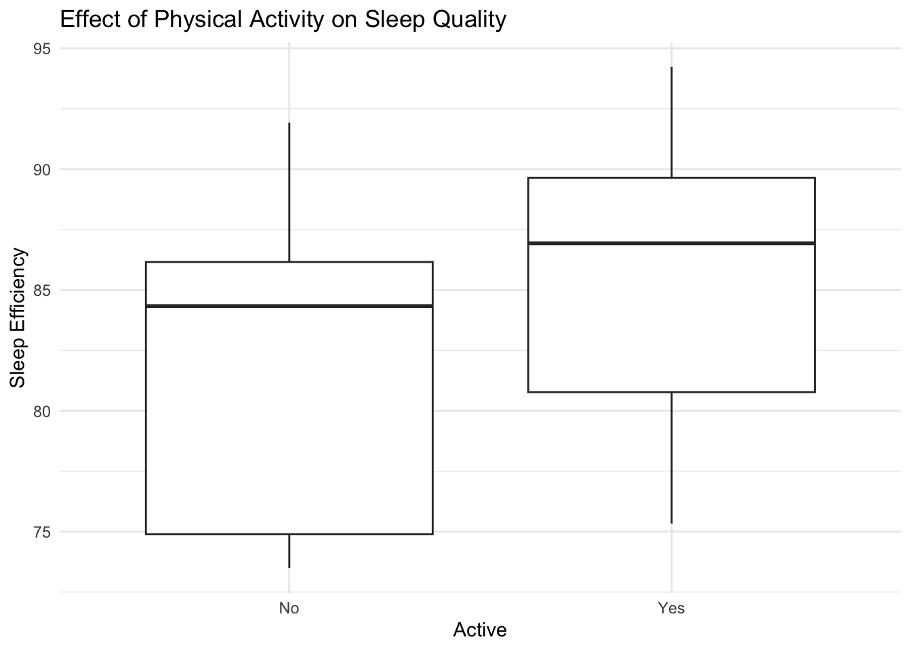
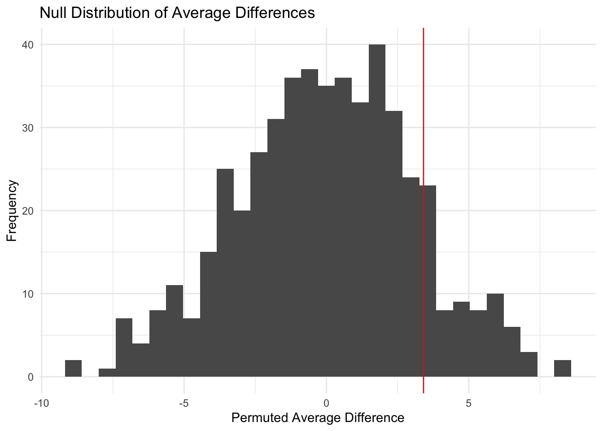
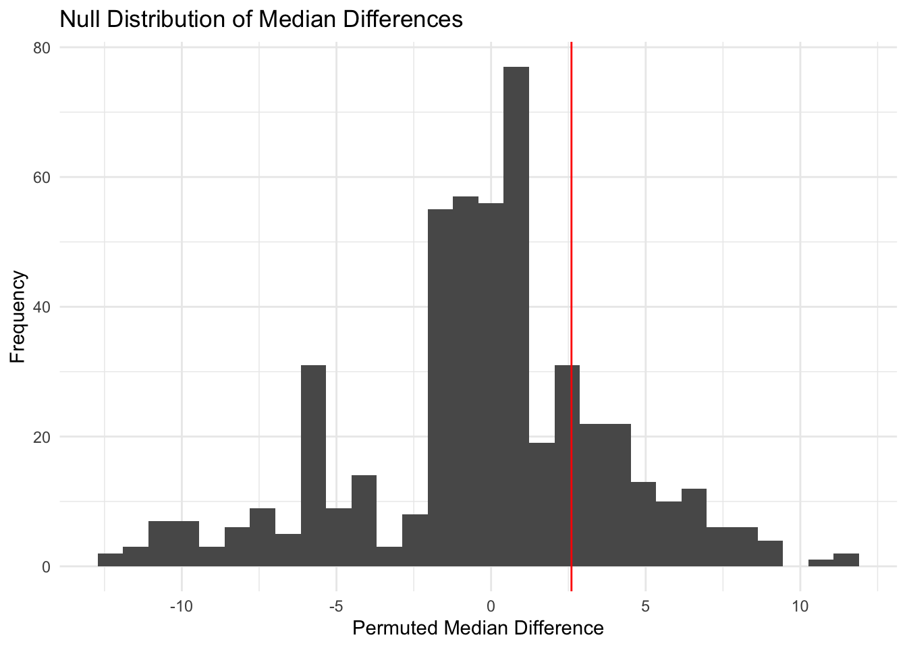

library(tidyverse)
library(lubridate)Introduction
Physical activity is widely believed to positively affect various aspects of health, including sleep quality. Sleep efficiency, a measure of the proportion of time spent asleep while in bed, is an important indicator of sleep quality. Despite common beliefs, the relationship between exercise and sleep efficiency needs to be thoroughly studied. This analysis explores the impact of physical activity on sleep efficiency using data from PhysioNet. By categorizing participants into active and inactive groups based on their total exercise duration and intensity, we aim to determine whether higher physical activity levels are associated with improved sleep efficiency.
Research Hypothesis
Higher levels of physical activity positively affect sleep efficiency.
Null Hypothesis (H₀)
There is no significant difference in sleep efficiency between individuals with higher levels of physical activity and those with lower levels of physical activity.
Alternative Hypothesis (H₁)
Individuals with higher levels of physical activity have significantly greater sleep efficiency compared to those with lower levels of physical activity.
Data
To answer the question of whether physical activity positively affects sleep efficiency, I chose a dataset from Multilevel Monitoring of Activity and Sleep in Healthy People by PhysioNet (MMASH). The data were collected and provided by BioBeats in collaboration with researchers from the University of Pisa. The dataset contains information about 22 healthy young adult males. Even though MMASH consists of seven files for each participant, in this analysis, we focus on two key files from the collection: Sleep.csv and Activity.csv.
Sleep.csv contains information about sleep duration and sleep quality of the participants, while Activity.csv provides a list of activity categories throughout the day. For this analysis, we focus specifically on physical activities:
Light movement (4): Slow to medium-paced activities like walking, household chores, and work-related movements. Medium movement (5): More vigorous activities such as fast walking and biking. Heavy movement (6): High-intensity exercises like gym workouts and running. As for the sleep data, we will focus on the Latency Efficiency variable.
Analysis
Load Necessary Libraries
Load R libraries for data manipulation, analysis, and visualization.
Load and wrangle the data
Since the data consists of separate files for each participant in the study, we will have to read all files of interest for each participant and select only the columns that we will focus on.
# Path to the main data folder
data_path <- "data/SleepUsers/"
# Get the list of user folders
user_folders <- list.dirs(path = data_path, full.names = TRUE, recursive = FALSE)
# Function to read Activity.csv file for a user (returns a dataframe)
read_activity_data <- function(user_folder) {
# Access the activity file
activity_file <- file.path(user_folder, "Activity.csv")
# Read the activity file into a dataframe and add a column with user number
activity_df <- read.csv(activity_file) |>
mutate(user = basename(user_folder))
return(activity_df)
}
# Function to read Sleep.csv file for a user (returns a dataframe)
read_sleep_data <- function(user_folder) {
# Access the sleep file
sleep_file <- file.path(user_folder, "Sleep.csv")
# Read the sleep file into the dataframe and add a column with user number
sleep_df <- read.csv(sleep_file) |>
# Select only Sleep Efficiency column
select(Efficiency) |>
mutate(user = basename(user_folder))
return(sleep_df)
}
# Read and combine Activity.csv files
activity_df <- user_folders |>
map(read_activity_data) |> list_rbind()
# Read and combine Sleep.csv files
sleep_df <- user_folders |>
map(read_sleep_data) |>
list_rbind() |>
rename(
efficiency = Efficiency
)
# Calculate average sleep efficiency over the 2 days of the experiment for each user
sleep_df <- sleep_df |>
group_by(user) |>
summarize(avr_sleep_efc = mean(efficiency))
# Select only rows with physical activity (light, medium, heavy)
activity_df <- activity_df |>
rename(
activity = Activity
) |>
filter(activity %in% c(4, 5, 6)) |>
mutate(activity = case_when(
activity == 4 ~ "light",
activity == 5 ~ "medium",
activity == 6 ~ "heavy",
),
# Convert start and end times to time objects (lubridate)
Start = hm(Start),
End = hm(End))
# Add a duration of the activity column (in minutes) and delete End and Start columns
activity_df <- activity_df |>
mutate(duration = as.numeric(End - Start) / 60) |>
select(-c("End", "Start"))
# Calculate total physical activity duration per user over 2 days and pivot wider
activity_df <- activity_df |>
group_by(user, activity) |>
summarise(total_duration = sum(duration, na.rm = TRUE)) |>
ungroup() |>
pivot_wider(names_from = activity, values_from = total_duration,
values_fill = 0)
# View the results
activity_df# A tibble: 22 × 4
user heavy light medium
<chr> <dbl> <dbl> <dbl>
1 user_1 130 10 10
2 user_10 90 40 0
3 user_11 77 0 0
4 user_12 95 0 40
5 user_13 150 0 0
6 user_14 58 0 0
7 user_15 70 0 120
8 user_16 95 0 0
9 user_17 105 0 70
10 user_18 40 0 0
# ℹ 12 more rowssleep_df# A tibble: 21 × 2
user avr_sleep_efc
<chr> <dbl>
1 user_1 89.6
2 user_10 75.1
3 user_12 94.2
4 user_13 76.5
5 user_14 90.8
6 user_15 89.4
7 user_16 74.3
8 user_17 86.9
9 user_18 84.4
10 user_19 74.1
# ℹ 11 more rowsNow that we have two dataframes with sleep and activity information, we can merge them together by users.
# Merge activity and sleep dataframes based on user
merged_data <- activity_df |> inner_join(sleep_df, by = c("user"))
# View the result
merged_data# A tibble: 21 × 5
user heavy light medium avr_sleep_efc
<chr> <dbl> <dbl> <dbl> <dbl>
1 user_1 130 10 10 89.6
2 user_10 90 40 0 75.1
3 user_12 95 0 40 94.2
4 user_13 150 0 0 76.5
5 user_14 58 0 0 90.8
6 user_15 70 0 120 89.4
7 user_16 95 0 0 74.3
8 user_17 105 0 70 86.9
9 user_18 40 0 0 84.4
10 user_19 95 0 0 74.1
# ℹ 11 more rowsVisualize the relationship of interest
Since there are three different activities, we want to combine them into one. However, heavy should weigh more than medium, and medium more than light. Thus, let’s introduce multipliers: heavy will be 3 as it is the most intensive activity, medium will be 2, and light will be 1.
# Multipliers for each activity
heavy_multiplier <- 3
medium_multiplier <- 2
light_multiplier <- 1
# Create a dataframe with total activity (light, medium, and heavy) for each user
activity <- merged_data |> group_by(user) |>
summarize(
total_exercise = heavy * heavy_multiplier + medium * medium_multiplier + light * light_multiplier,
avr_sleep_efc = avr_sleep_efc
) |>
ungroup()
# View the result
activity# A tibble: 21 × 3
user total_exercise avr_sleep_efc
<chr> <dbl> <dbl>
1 user_1 420 89.6
2 user_10 310 75.1
3 user_12 365 94.2
4 user_13 450 76.5
5 user_14 174 90.8
6 user_15 450 89.4
7 user_16 285 74.3
8 user_17 455 86.9
9 user_18 120 84.4
10 user_19 285 74.1
# ℹ 11 more rowsTo determine who counts as an active person, let’s find the average minutes of activity among the participants and divide the population into two parts: active and non-active, based on the average.
# Average time active in the population
activity |> summarize(avr_time_active = mean(total_exercise))# A tibble: 1 × 1
avr_time_active
<dbl>
1 331.The average time active is 330 minutes, so let’s use it to determine whether a person is active or not.
# Minimum minutes of physical activity to be counted as "active"
active_avr <- 330
# Add a logical column that represents whether a user was active or not
activity <- activity |>
mutate(active = ifelse(total_exercise > active_avr, "Yes", "No"))
# View the result
activity# A tibble: 21 × 4
user total_exercise avr_sleep_efc active
<chr> <dbl> <dbl> <chr>
1 user_1 420 89.6 Yes
2 user_10 310 75.1 No
3 user_12 365 94.2 Yes
4 user_13 450 76.5 Yes
5 user_14 174 90.8 No
6 user_15 450 89.4 Yes
7 user_16 285 74.3 No
8 user_17 455 86.9 Yes
9 user_18 120 84.4 No
10 user_19 285 74.1 No
# ℹ 11 more rowsactivity |>
ggplot(aes(x = active, y = avr_sleep_efc)) +
geom_boxplot() +
labs(
x = "Active",
y = "Sleep Efficiency",
title = "Effect of Physical Activity on Sleep Quality"
) +
theme_minimal()
From this boxplot, we can see that, in our population, people who exercise more tend to have slightly better sleep efficiency.
Calculate the observed statistics
# Calculate the mean and median of active and non-active groups
activity |> group_by(active) |>
summarize(avr_quality = mean(avr_sleep_efc),
med_quality = median(avr_sleep_efc)
)# A tibble: 2 × 3
active avr_quality med_quality
<chr> <dbl> <dbl>
1 No 82.2 84.3
2 Yes 85.6 86.9The statistics above confirm that, on average, people in our population who were active had slightly better sleep efficiency than those who didn’t exercise as much.
# Difference in means and medians
activity |> group_by(active) |>
summarize(avr_quality = mean(avr_sleep_efc),
med_quality = median(avr_sleep_efc)
) |>
summarize(
ave_diff = diff(avr_quality),
med_diff = diff(med_quality)
)# A tibble: 1 × 2
ave_diff med_diff
<dbl> <dbl>
1 3.41 2.60The difference in mean sleep efficiency between people who exercise more than average and those who do not is 3.4, and the difference in medians is 2.6.
Generate a null sampling distribution.
# Function to generate a null sampling distribution
perm_data <- function(rep, data) {
data |>
mutate(efc_perm = sample(avr_sleep_efc, replace = FALSE)) |>
group_by(active) |>
summarize(
obs_avr = mean(avr_sleep_efc),
obs_med = median(avr_sleep_efc),
perm_avr = mean(efc_perm),
perm_med = median(efc_perm)
) |>
summarize(
obs_avr_diff = diff(obs_avr),
obs_med_diff = diff(obs_med),
perm_avr_diff = diff(perm_avr),
perm_med_diff = diff(perm_med),
rep = rep
)
}
# Test the function
map(1:10, perm_data, data = activity) |>
list_rbind()# A tibble: 10 × 5
obs_avr_diff obs_med_diff perm_avr_diff perm_med_diff rep
<dbl> <dbl> <dbl> <dbl> <int>
1 3.41 2.60 -5.33 -7.09 1
2 3.41 2.60 -1.45 -1.02 2
3 3.41 2.60 1.29 -0.115 3
4 3.41 2.60 1.65 2.95 4
5 3.41 2.60 -0.913 1.19 5
6 3.41 2.60 1.91 -0.0200 6
7 3.41 2.60 -3.36 -5.16 7
8 3.41 2.60 1.70 0.0100 8
9 3.41 2.60 -1.87 -0.860 9
10 3.41 2.60 2.41 1.07 10Visualize the null sampling distribution (average)
set.seed(47)
perm_stats <- map(1:500, perm_data, data = activity) |> list_rbind()
perm_stats |>
ggplot(aes(perm_avr_diff)) +
geom_histogram() +
geom_vline(aes(xintercept = obs_avr_diff), color = "red") +
labs(
x = "Permuted Average Difference",
y = "Frequency",
title = "Null Distribution of Average Differences"
) +
theme_minimal()
This histogram shows that the observed average difference is not significant and is likely to occur by chance.
Visualize the null sampling distribution (median)
perm_stats |>
ggplot(aes(x = perm_med_diff)) +
geom_histogram() +
geom_vline(aes(xintercept = obs_med_diff), color = "red") +
labs(
x = "Permuted Median Difference",
y = "Frequency",
title = "Null Distribution of Median Differences"
) +
theme_minimal()
This histogram shows that the observed median difference is not significant and is likely to occur by chance.
P-value
perm_stats |>
summarize(p_val_avr = mean(perm_avr_diff > obs_avr_diff),
p_val_med = mean(perm_med_diff > obs_med_diff))# A tibble: 1 × 2
p_val_avr p_val_med
<dbl> <dbl>
1 0.124 0.21Conclusion
In this study, we examined the impact of physical activity on sleep efficiency among 22 healthy young adult males. We categorized participants into active and inactive groups based on their total exercise duration, weighted by activity intensity. Our analysis showed that the active group had a slightly higher average sleep efficiency compared to the inactive group, with a mean difference of 3.4% and a median difference of 2.6%.
From these data, the observed differences seem to be consistent with the distribution of differences in the null sampling distribution. There is no evidence to reject the null hypothesis.
We cannot claim that, in the population, the average sleep efficiency for people who exercise more than the average person is larger than the average sleep efficiency for people who do not exercise more than the average person (p-value = 0.124).
We cannot claim that, in the population, the median sleep efficiency for people who exercise more than the average person is larger than the median sleep efficiency for people who do not exercise more than the average person (p-value = 0.21).
Therefore, we conclude that, within this sample, there is no significant evidence to suggest that higher levels of physical activity are associated with improved sleep efficiency. It’s important to note that the small sample size and the homogeneous nature of the participants (all healthy young adult males) may limit the generalizability of these findings. Further research with a larger and more diverse sample may be necessary to fully understand the relationship between physical activity and sleep efficiency.
Reference
Rossi, A., Da Pozzo, E., Menicagli, D., Tremolanti, C., Priami, C., Sirbu, A., Clifton, D., Martini, C., & Morelli, D. (2020). Multilevel Monitoring of Activity and Sleep in Healthy People (version 1.0.0). PhysioNet. https://doi.org/10.13026/cerq-fc86.